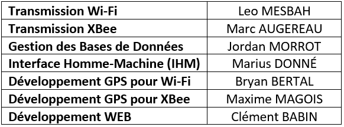

A propos du projet
Qu'est-ce que VELA Tracking ?
VELA Tracking est un projet de BTS SN-IR pense pour visualiser une regate en temps reel et en differe. La version affichee ici reprend le contenu du projet d'origine dans une mise en page plus nette, comme une IHM Raspberry de demonstration.
Objectif
- Rassembler les positions des bateaux et des balises dans une IHM lisible.
- Afficher la vitesse, la trace et les donnees de course sans chargement inutile.
- Mettre en avant la logique Wi-Fi du projet, tout en laissant XBee de cote pour cette version.
Contexte technique
Coordonnees
Recuperation des coordonnees GPS pour alimenter la course.
Wi-Fi
Transmission locale vers le serveur de course et l'interface de visualisation.
XBee
Communication radio XBee au coeur de la chaine embarquee.
Organisation de l'equipe
Le tableau suivant resume la repartition des taches telle qu'elle apparait dans le projet initial.

Ce qu'on retient
L'ensemble sert a montrer un site lisible, une page de course nette et une IHM Qt active.
Visualisation nette
Donnees locales
Sans XBee